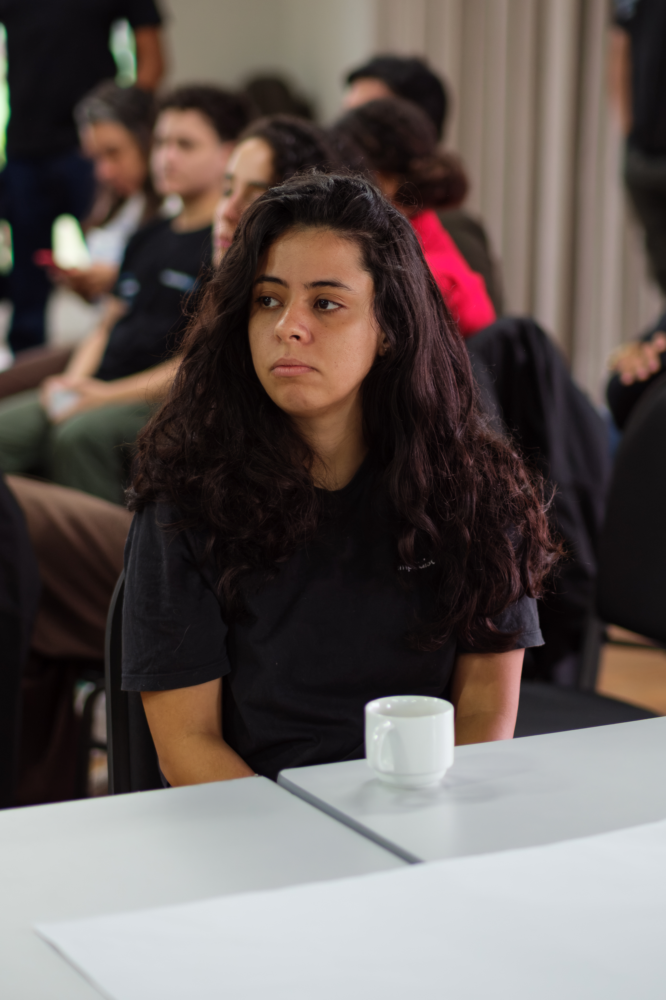
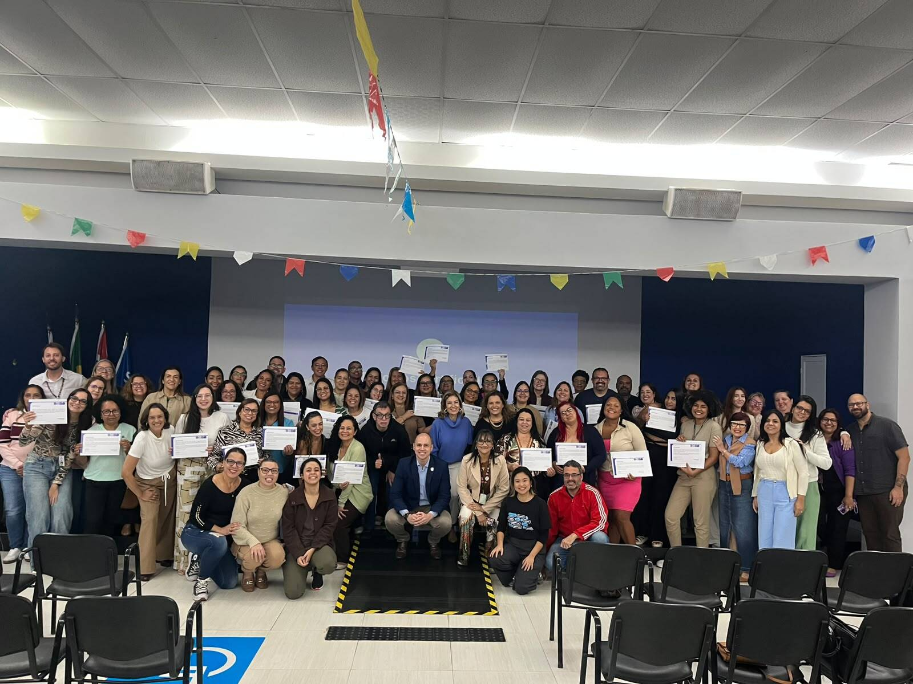
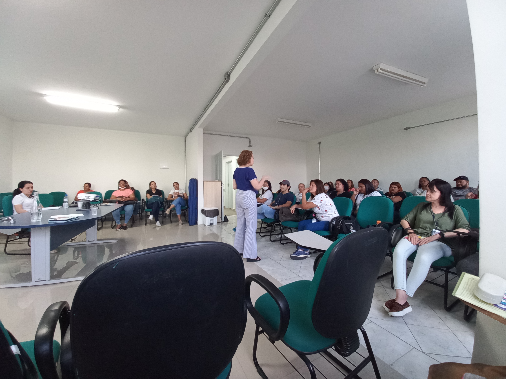
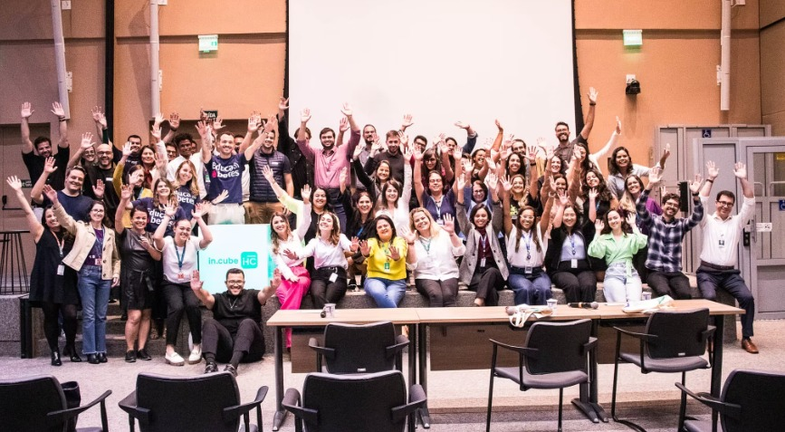
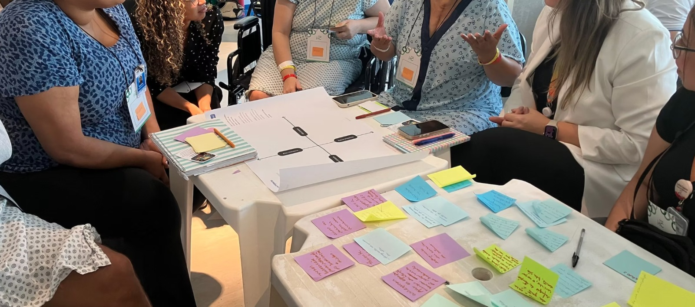
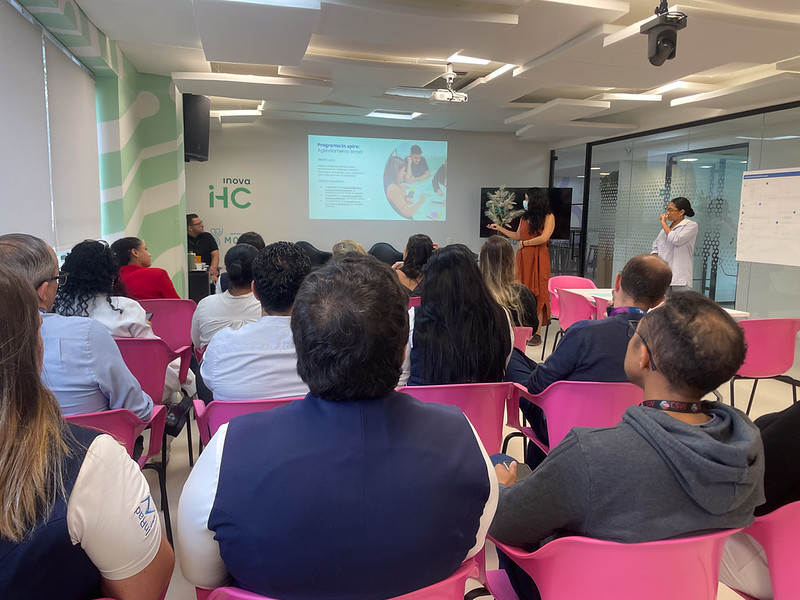
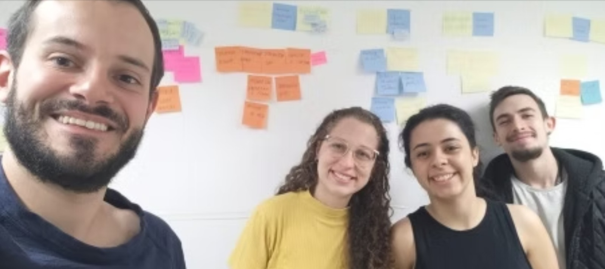
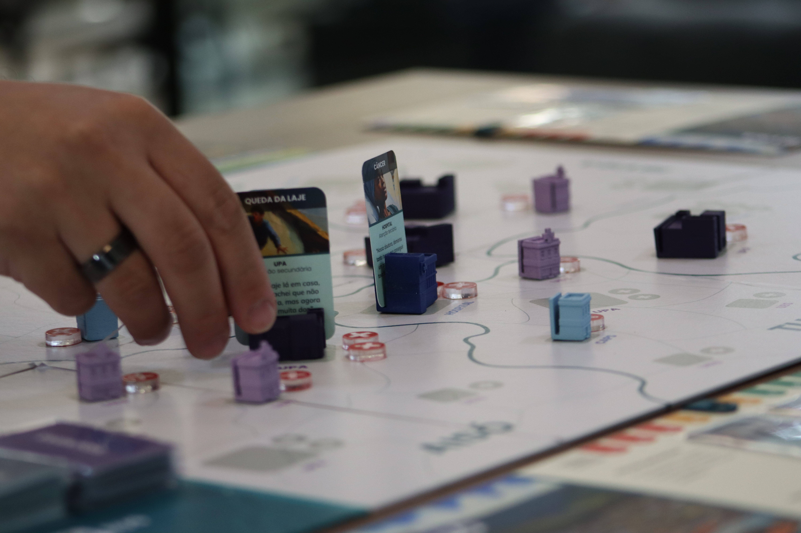

EVELYN BITENCOURT
Especialista em service design focada em sistemas complexos.

Sobre mim
Staff design ponta a ponta, com foco em saúde pública.
Sou Evelyn Bitencourt, mestre em Design pela USP, com oito anos aplicando UX Design e Service Blueprint a saúde pública, educação e transformação governamental, em passagens pela ImpulsoGov, InovaHC/HCFMUSP, o (011).lab e uma consultoria para a UNESCO. Trabalho perto de quem vive o problema, mapeando a Jornada do Usuário real por trás dos dados. Sou curiosa, direta e persistente, e não desisto de uma solução só porque o sistema é complicado.
Conquistas: menção honrosa no Don Norman Award 2024 (In.cube); NPS 95 no mesmo programa; coordenação nacional da formação em saúde mental na APS do SUS, na ImpulsoGov. Me destaco em: escuta ativa, liderança de times multidisciplinares e comunicação, traduzindo achados complexos de User Experience em decisões simples.

Projetos

Formação PROAPS
Diagnóstico com 720 profissionais e redesenho da formação em saúde mental na APS de Santos, de um curso único a três trilhas por categoria.

Mapeamento Viva Vida
Pesquisa qualitativa sobre intervenção psicossocial via WhatsApp para idosos com sintomas depressivos, com IPq-HCFMUSP, King's College e FAUUSP.

Programa In.cube
Redesenho do programa de aceleração de tecnologias em saúde do InovaHC com Biodesign. Menção honrosa, Norman Award 2024 (Educação).

Programa In.spire
Jornada de capacitação em transformação para colaboradores do HCFMUSP, com participação direta de pacientes no mapeamento de desafios.

Agendamento de Exames de Imagem
Diagnóstico do agendamento de exames por imagem do InRad/HCFMUSP, do mapeamento de jornadas ao ETP e roadmap de contratação.

Pessoas que Transformam
Redesenho do programa de transformação da Prefeitura de São Paulo, com diagnóstico, jornada modular e árvore de decisão. (011).lab · SMIT/PMSP · UNESCO.

Jogo In.spire SUS
Jogo cooperativo de tabuleiro sobre gestão intermunicipal do SUS, mecânica, narrativa e prototipagem de +200 componentes. Selecionado, DOFF 2024 (maior feira de jogos de tabuleiro da América Latina).